Overview
CoFiDrive is a camera-based planner that uses a compact scene memory for trajectory generation and combines scene and patch features for candidate scoring. Training-only augmentation supplies additional motion alternatives to the scorer.

- TC — Semantic Token Compressor. A scene-level router mixes six active experts to refine the 64 camera registers used by the generator and scorer.
- CCS — Cross-Compression Scorer. Candidate-dependent gated attention combines scene tokens with 1,008 pooled patch tokens to score each proposal.
- CSA — Control-Space Augmentation. Acceleration and yaw-rate perturbations around 16 selected seeds supply 192 auxiliary training slots. Inference retains the original 64 proposals.
Results
CoFiDrive is trained for 10 epochs. The train85k main result averages three independent training seeds.
| Evaluation | Training setting | Metric | Score ↑ |
|---|---|---|---|
| NAVSIM-v1 navtest | train85k | PDMS | 92.4 |
| NAVSIM-v1 navtest | trainval103k | PDMS | 92.9 |
| NAVSIM-v2 NavHard | NavHard training protocol | EPDMS | 48.0 |
On NavHard, the local DrivoR reproduction scores 47.3 under the same 10-epoch training and evaluation protocol. This differs from its published 48.3 result.
| Base planner | + TC | + CCS | + CSA |
|---|---|---|---|
| 91.70 | 91.80 | 91.90 | 92.40 |
Visualizations
Trajectory planning
Each column shows the same scene for two planners, using their own generated candidates. Blue curves are proposals; yellow is the selected path; white is the reference where shown. Images open at full resolution.
 CoFiDrive
CoFiDrive

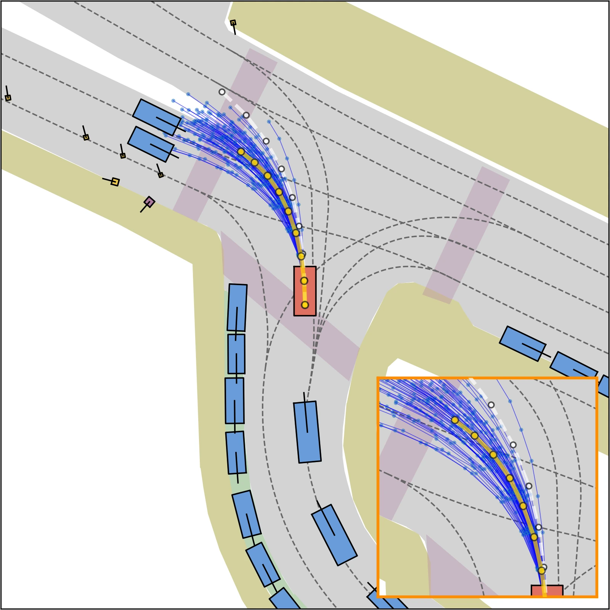
CoFiDrive
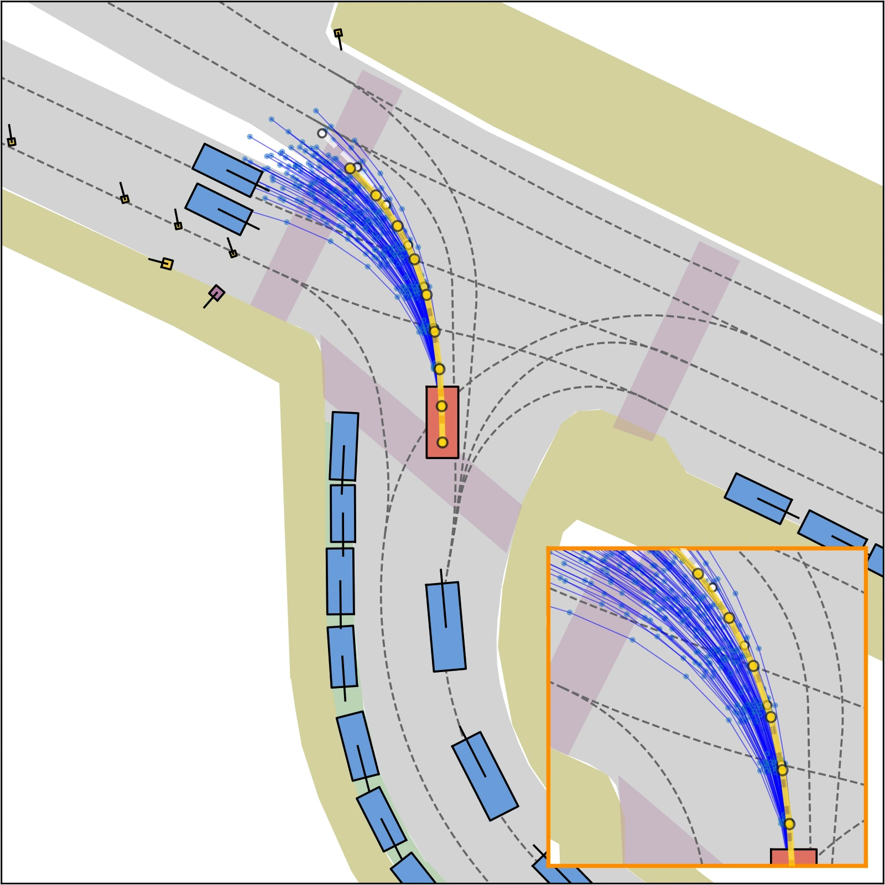

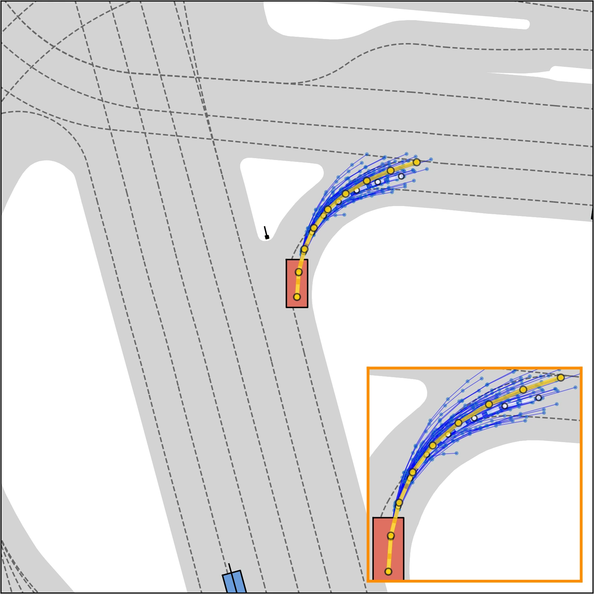
CoFiDrive
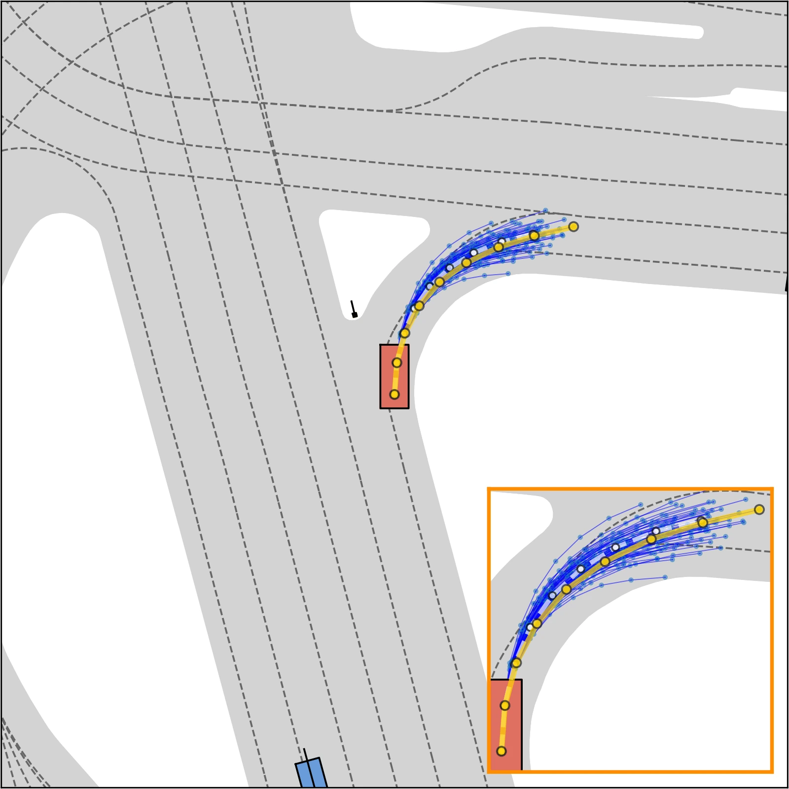

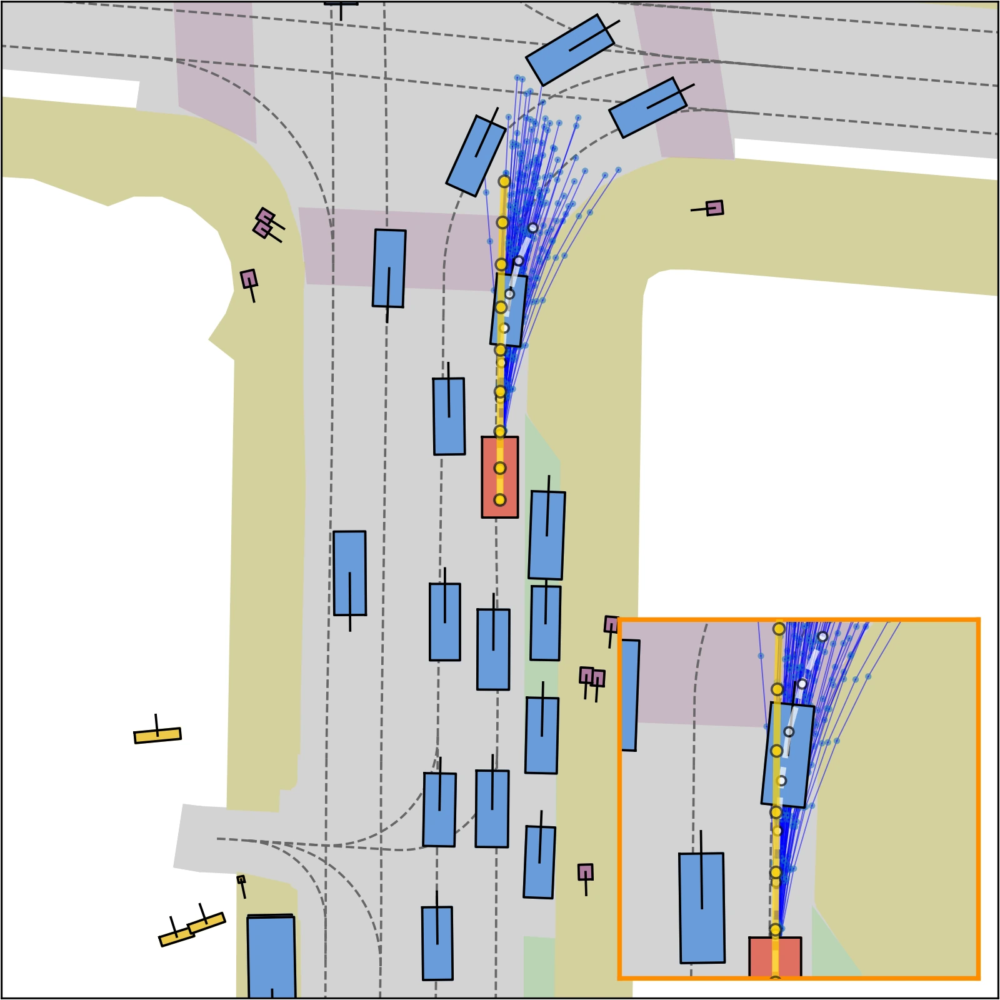
CoFiDrive
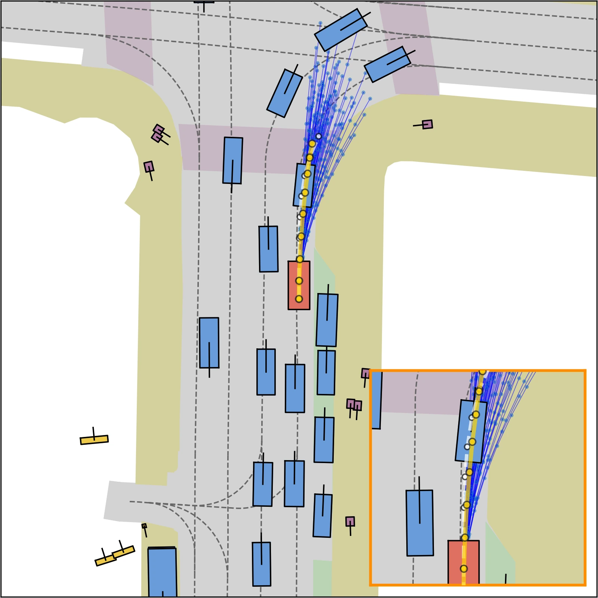
Register attention
Mean attention for the four camera views. Warmer colors indicate higher displayed attention.
 CoFiDrive
CoFiDrive

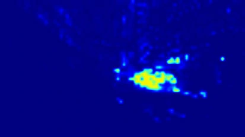
CoFiDrive
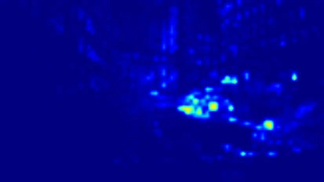

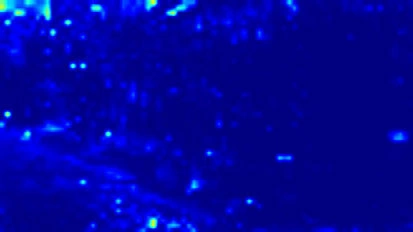
CoFiDrive
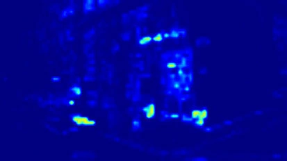

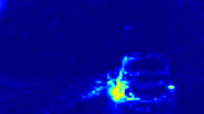
CoFiDrive
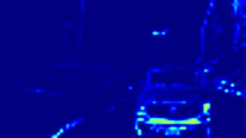
Control-space augmentation
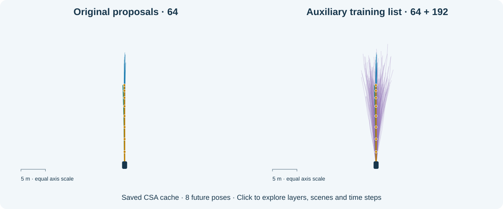